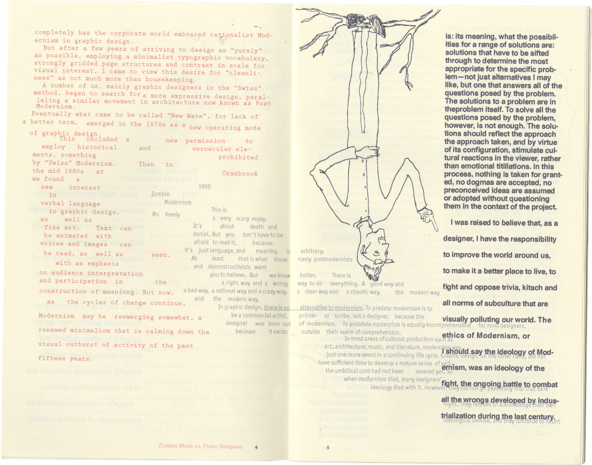
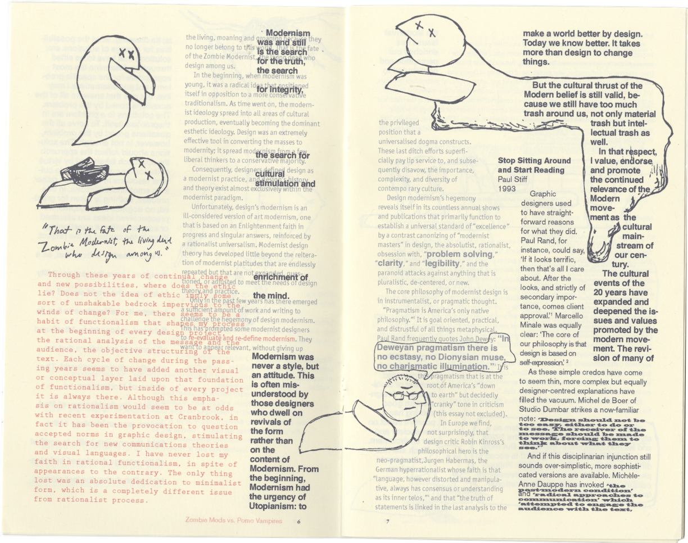
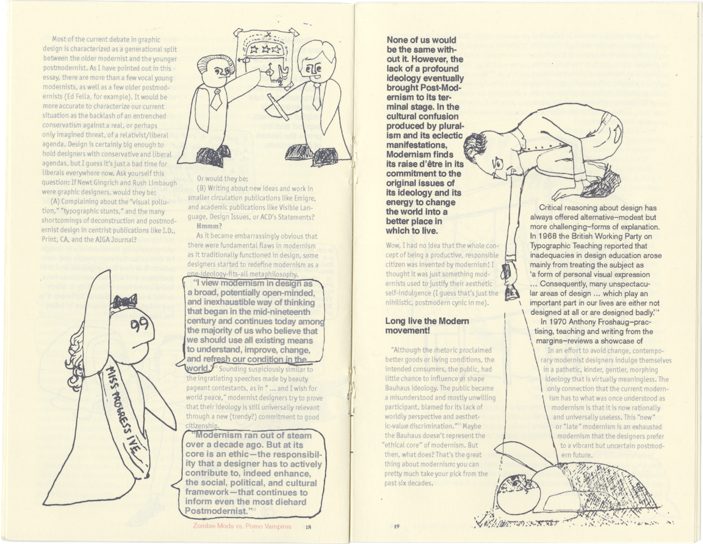
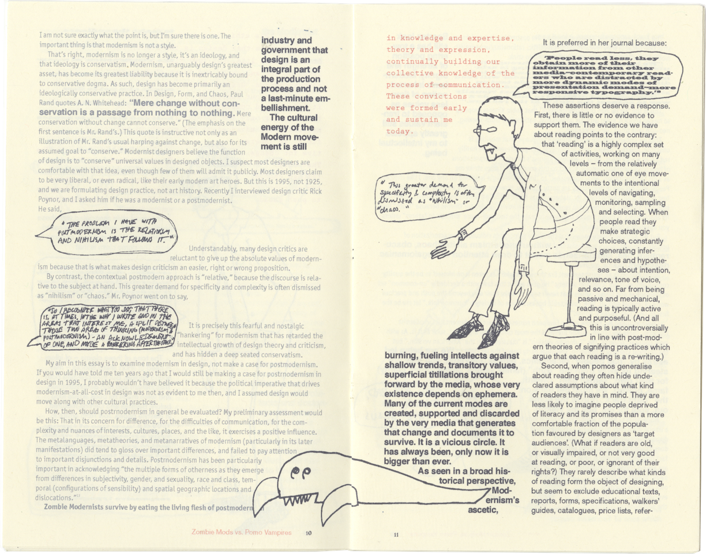

Zombie Mods vs. Pomo Vampires. I typeset four essays written on the subject of Modernism
vs. Postmodernism by notable designers with very different
opinions. All of the essays flow simultaneously, creating
discourse among each other. They seem to be arguing
directly, taking personal jabs at each other, so I decided
to supplement the greater narrative with characters: the
Postmodernist Vampire and the Modernist Zombie, always at
battle, neither winning in the end.
essays by Katherine McCoy, Massimo Vignelli,
Mr. Keedy & Paul Stiff
Original illustrations by me (Libby Marrs)
2018